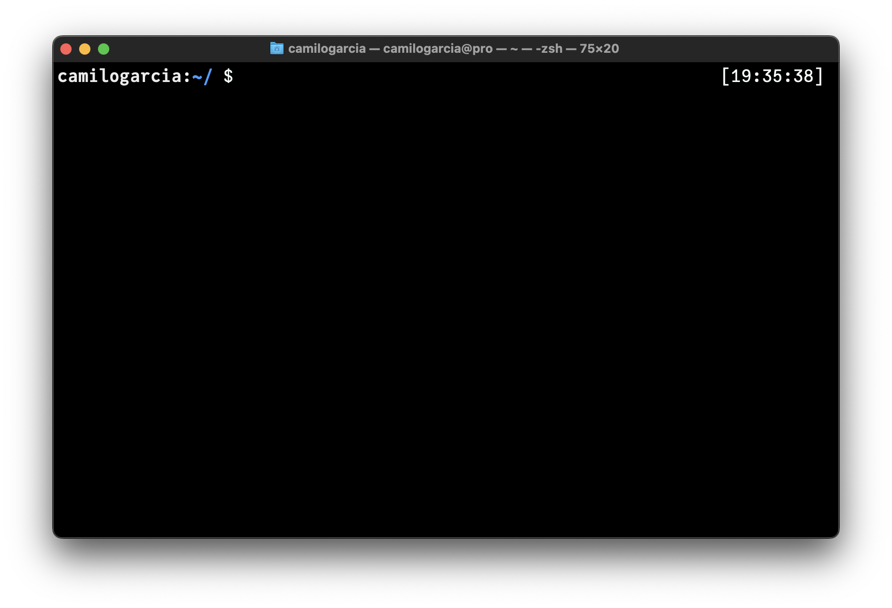
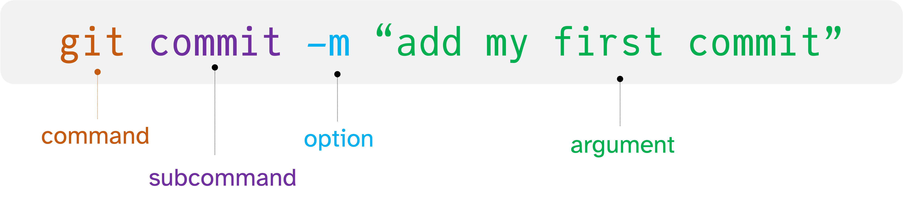

1 The command line
In this chapter we will explore the fundamentals of the command line interface (aka CLI). And the differences between Operating Systems (OS), Unix, CLI, Bash and Terminal.
As you will see the CLI is composed of several programs enabling the interaction with the machine, we will discuss some of the basics to navigate your machine, and some advance one that enable complex operations and automating tasks.
1.1 Getting started with the command line
Before landing into the CLI let us consider the Unix concept. The first question that comes in this section is: what is Unix? It simply is an operating system (OS). On another terms it is a set of programs that inter-operate with each other to let you communicate with the machine. A very important variant of Unix with a libre access is the very known OS Linux. The most important idea behind Unix based systems is the idea that we can use it to access information and hardware programmatically.
Almost every computer has a way to interact with or access to the inner elements of the computer. Such interface is called the terminal Fig. 1.1

1.2 Anatomy of a command

1.3 Basic Unix commands
Programs, files and directories on every machine display hierarchical paths (routes), starting out from the root (/). The root represents the beginning of all the software installed in the machine. And many other files are nested from there forming a tree-like structure for the paths Fig. 1.3

You can inspect the paths of a nested directory tree using tree command in you cli:
tree -d -L 11.3.1 Printing your working directory
To know where you are you can see your current location, that is to print your working directory using the pwd command.
pwd .1.3.2 Making new directories
mkdir test-dir1.3.3 Change to other directory
cd test-dirSome basic arguments to navigate across your terminal:
cd .. # change backwards
cd ~ # change to the home
cd / # change to the root
cd - # change to previous dir1.3.4 Creating a file
A simple command to create any file inside your terminal is touch it just create a file, but do not allow any editing.
touch new-file.txtThe new-file.txt is empty and created on your current location unless you assign another path when creating it. We suggest to take a look at Allison Horst, especially on how to name files depending on the case see Fig. 1.4

1.3.5 Listing files
ls 1.3.6 Printing files to the screen
cat new-file.txtFor more explanations on the basic commands in the command line we suggest to visit the first chapters of Computing skills for biologist from Allesina and Wilmes (2019)
1.4 Advance Unix commands
sedgrep ">" You can navigate your executed commands by typing the ::up-arrow:: key